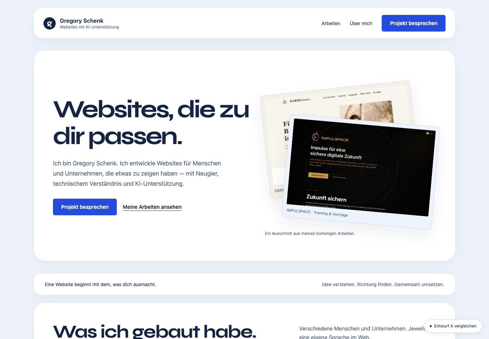
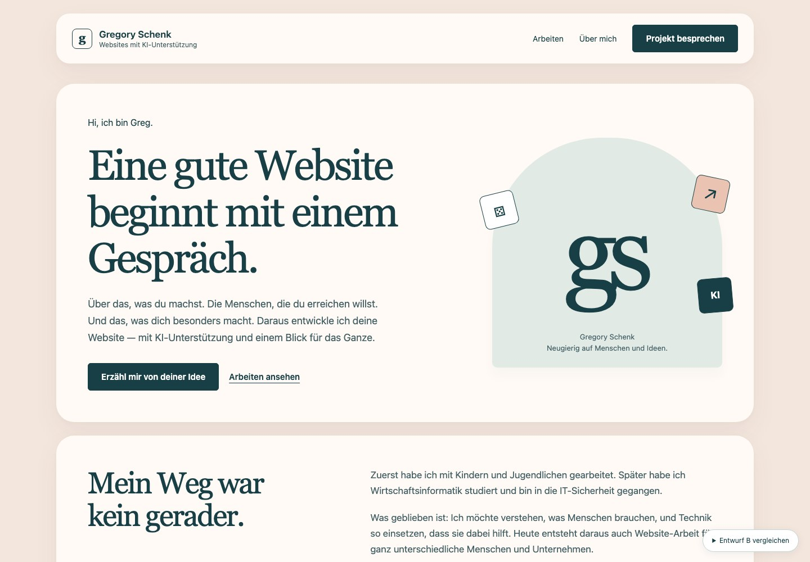
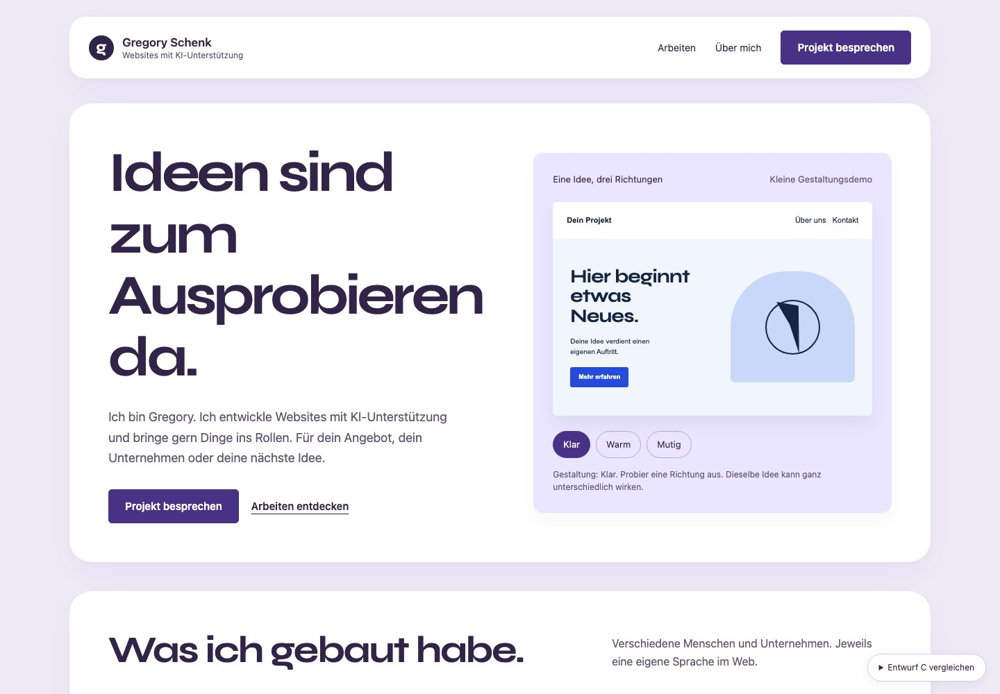
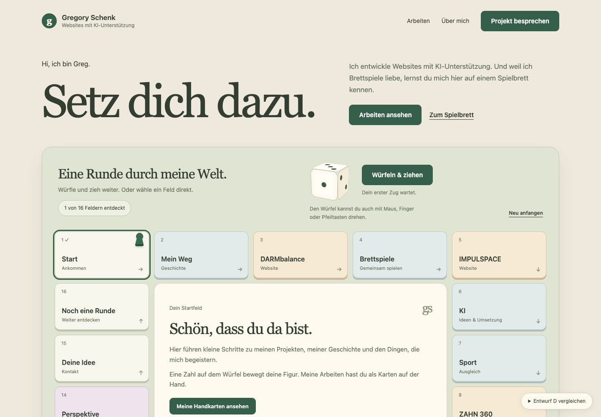

Gregory Schenk · Deine eigene Website
Dein Auftritt.
Vier Richtungen.
Deine Arbeiten, ein Stück deiner Geschichte und die Dinge, die dich begeistern. Drei ruhige Entwürfe mit schwebenden Inhalten und ein neuer Entwurf als spielbares Portfolio.

Klarer Projektauftritt
Deine Websites im Mittelpunkt. Ruhig, direkt und mit einem kurzen persönlichen Teil.
Entwurf A öffnen
Greg, persönlich
Dein Weg und deine Haltung zuerst. Nahbar, mit ruhigen Farben und einer persönlichen Sprache.
Entwurf B öffnen
Neugierig bleiben
Ein schlichtes Portfolio mit einem kleinen Experiment. Etwas mehr Freude am Ausprobieren.
Entwurf C öffnen
Am Spieltisch
Wandere durch das Portfolio. Würfle, drehe den Würfel und entdecke deine Arbeiten als Handkarten.
Entwurf D öffnenPersönlich bleiben.
Spielerisch entdecken.
B bleibt der ruhige, persönliche Ausgangspunkt. D setzt deine Freude an Brettspielen als Erlebnis um: Spielfelder führen durch deine Welt, Projektkarten öffnen die Arbeiten. Beide Richtungen lassen sich später auch verbinden.
Design-Entwürfe zur Vorschau. Texte sind Vorschläge; die Projektansichten stammen aus deinem Dev-Ordner. Die Kontaktfunktion bereitet nur einen lokalen Textdownload vor.